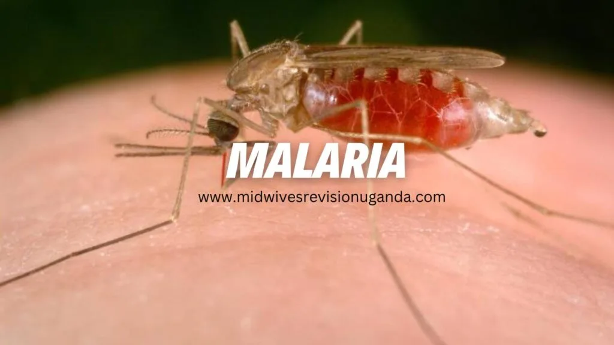

Expanded Nursing Uganda Explanation
Malaria should be reviewed through safe maternal and newborn assessment, early recognition of danger signs, respectful communication and timely referral. Connect the definition to vital signs, bleeding, fetal or newborn wellbeing, patient education and local protocol requirements.
Contents, 23 sections (tap to expand)
01 Nursing Uganda Snapshot
Malaria is a mosquito-borne parasitic infection that can progress from fever and malaise to anaemia, hypoglycaemia, convulsions, severe dehydration, shock and death if severe disease is missed.
02 Build The Idea
Think of malaria in three layers: transmission by Anopheles mosquito, illness from parasites in blood, and complications from anaemia, dehydration, low glucose or cerebral involvement.
- Uncomplicated malaria: fever, headache, chills, body weakness and positive test.
- Severe malaria: impaired consciousness, repeated convulsions, respiratory distress, severe anaemia, shock or jaundice.
- Pregnancy: increases risk of anaemia, miscarriage, low birth weight and severe disease.
- Prevention: treated nets, environmental control, chemoprevention where indicated and early testing.
03 Ward Mode
In OPD or ward, do not only write 'fever equals malaria'. Test where possible, assess danger signs and consider other causes of fever.
- Check temperature, pulse, respiratory rate, blood pressure, hydration and mental state.
- Ask about pregnancy, age, previous treatment, vomiting and convulsions.
- Do malaria test as ordered and give antimalarial correctly.
- Monitor response and educate on completing treatment.
04 Red Flags
- Altered consciousness.
- Repeated convulsions.
- Severe pallor.
- Respiratory distress.
- Persistent vomiting.
- Pregnancy with fever.
- Signs of shock or dehydration.
05 Patient Teaching
- Complete the full antimalarial course.
- Sleep under an insecticide-treated net.
- Return immediately for convulsions, confusion, breathing difficulty, severe weakness or persistent vomiting.
- Pregnant women and children need early care.
06 Exam Answer Map
- Define malaria.
- State cause and transmission.
- List signs of uncomplicated and severe malaria.
- Explain investigations and treatment support.
- Add prevention and health education.
07 Malaria
Malaria is an acute febrile illness caused by the Plasmodium parasite, which invades red blood cells (RBCs) .
It is an infectious disease where parasitic protozoa of the genus Plasmodium multiply within RBCs, leading to a variety of clinical manifestations.
08 Aetiology :
Parasite : The causative agent of malaria is a protozoan parasite belonging to the genus Plasmodium . There are five species that infect humans:
- Plasmodium falciparum : The most dangerous species, responsible for the majority of severe and fatal cases.
- Plasmodium vivax : Causes benign tertian malaria (fever every 48 hours), but can cause serious complications in some cases.
- Plasmodium ovale : Causes ovale malaria, similar to vivax malaria, but is less common.
- Plasmodium malariae : Causes quartan malaria (fever every 72 hours). While typically less severe, can lead to chronic complications.
- Plasmodium knowlesi : Primarily infects monkeys but can be transmitted to humans.
Vector : The parasite is transmitted to humans through the bite of an infected female Anopheles mosquito , also known as the “malaria mosquito.”
Incubation Period
The period between the mosquito bite and the onset of malarial illness usually ranges from one to three weeks (7 to 21 days).
However, certain types of malaria, such as P. vivax and P. ovale, may take much longer, up to eight to 10 months, to cause symptoms. These parasites remain dormant (inactive or hibernating) in the liver cells during this extended period.
Unfortunately, some dormant parasites may persist even after a patient recovers from malaria, leading to the possibility of relapsing malaria, wherein the patient may fall ill again.
09 Transmission :
- Mosquito Bite : An infected female Anopheles mosquito bites a human and injects sporozoites (infective stage of the parasite) into the bloodstream.
- Liver Stage : Sporozoites travel to the liver and invade liver cells, where they multiply asexually.
- Blood Stage : After several days, the parasite enters the bloodstream as merozoites, invading red blood cells.
- Blood Stage Multiplication : Merozoites multiply asexually within red blood cells, causing their rupture and releasing more merozoites.
- Sexual Stage : Some parasites develop into gametocytes, the sexual stage.
- Mosquito Ingestion : If a mosquito bites an infected human, it ingests gametocytes.
- Mosquito Development: Inside the mosquito, gametocytes mature and fertilize, forming sporozoites.
- Mosquito Transmission : The sporozoites migrate to the mosquito’s salivary glands, ready to infect another human.
10 Predisposing Factors:
- Geographic Location : Malaria is endemic in tropical and subtropical regions with suitable mosquito breeding grounds.
- Age : Children under five are at the highest risk of severe malaria.
- Immune Status : People with weakened immune systems (e.g., due to HIV/AIDS or malnutrition) are more susceptible to severe disease.
- Pregnancy : Pregnant women are more vulnerable to malaria, as the parasite can affect both mother and fetus.
- Travel History : Travelers to malaria-endemic areas are at risk of acquiring the disease.
- Genetic Factors: Some individuals possess genetic traits that provide some protection against malaria.
11 Signs and Symptoms of Malaria
Malaria manifests through a variety of signs and symptoms, with fever being the most prominent and characteristic feature. The fever in malaria follows an intermittent pattern, coming and going repeatedly. A typical malaria attack can be categorized into three phases:
1. The Cold Stage :
- Sudden onset of intense chills, often accompanied by shivering.
- Sensation of coldness throughout the body.
2. The Hot Stage :
- Intense heat and feverish feeling.
- High fever, reaching 104°F (40°C) or higher.
- Headache, often severe and localized to the frontal region.
- Muscle pain, aches and stiffness, particularly in the back and limbs.
- Nausea and vomiting, especially during febrile episodes.
3. The Sweating Stage :
- Profuse sweating, often accompanied by a sense of relief from symptoms.
Other Symptoms Include:
A. Uncomplicated Malaria
i. In children under 5 years :
- High fever : Detected by clinical thermometer, by touch, or reported by the caregiver.
- Rigors : Shivering or trembling associated with the fever.
- Loss of appetite : Reduced frequency of feeding, especially noticeable with breastfeeding.
- Weakness and inactivity : Decreased energy levels and reduced movement.
- Lethargy : Drowsiness and sluggishness.
- Vomiting and diarrhea : These symptoms may accompany the fever.
ii. In older children and adults :
- Fever : Recurrent fever, often accompanied by chills, sweating, and other symptoms.
- Loss of appetite : Decreased desire for food.
- Nausea and vomiting : Feeling sick to the stomach and throwing up.
- Headache : Severe pain in the head, often localized to the frontal region.
- Joint pains : Aching and stiffness in the joints.
- Muscle aches : Soreness and pain in the muscles.
- Weakness and lethargy: General fatigue and lack of energy.
B. Complicated/ Severe Malaria (Cerebral Malaria)
i. In children 5 years and below :
Signs of uncomplicated malaria plus any of the following:
- Convulsions : Seizures within the last 2 days or currently present.
- Inability to breastfeed or drink : Difficulty or refusal to feed.
- Vomiting everything : Persistent vomiting, even after small amounts of food or fluids.
- Altered mental state: Drowsiness, dizziness, lethargy, unconsciousness.
- Extreme weakness (prostration) : Inability to move or sit up.
- Severe respiratory distress/ dyspnea : Difficulty breathing, rapid breathing, or labored breathing.
- Severe anemia : Pale skin, fatigue, and shortness of breath due to low red blood cell count.
- Severe dehydration : Dry mouth, sunken eyes, decreased urine output.
- Hepatosplenomegaly : Enlargement of the liver and spleen.
- Hemolytic jaundice : Yellowing of the skin and eyes due to destruction of red blood cells.
ii. In children 5 years and above (adults) :
Signs of uncomplicated malaria plus any of the following:
- Mental confusion and hallucinations : Disorientation, delirium, or seeing things that aren’t there.
- Unconsciousness : Loss of consciousness.
- Extreme weakness (unable to stand without support ): Severe weakness and inability to stand without assistance.
12 Illustration of the Malaria Parasite Life Cycle:
Malaria Parasite Life Cycle:
- Infection begins when an infected female Anopheles mosquito bites a person, introducing Plasmodium sporozoites into the bloodstream.
- The sporozoites swiftly move into the human liver .
- Over the next 7 to 10 days, the sporozoites multiply asexually in liver cells, causing no noticeable symptoms.
- The parasites, now in the form of merozoites , are released from liver cells and travel through the heart to the lungs , where they settle within lung capillaries. The vesicles eventually disintegrate, releasing merozoites into the blood phase of their development.
- In the bloodstream, the merozoites invade red blood cells ( erythrocytes ) and undergo further multiplication until the cells burst . They then invade more erythrocytes , repeating this cycle and causing fever each time they break free and infect new blood cells.
- Some of the infected blood cells deviate from the asexual multiplication cycle and instead develop into sexual forms of the parasite known as gametocytes , which circulate in the bloodstream.
- When a mosquito bites a human, it ingests these gametocytes , which further mature into sexually active gametes within the mosquito.
- The fertilized female gametes transform into mobile ookinetes that penetrate the mosquito’s midgut wall, forming oocysts on its exterior surface.
- Inside the oocyst , numerous active sporozoites develop. Eventually, the oocyst bursts, releasing sporozoites into the mosquito’s body cavity, which then migrate to its salivary glands .
- The cycle of human infection begins anew when the mosquito bites another person.
Diagnosis of Malaria
Diagnosing malaria involves considering the patient’s clinical signs and symptoms, which can be challenging due to the similarity of malaria symptoms with other diseases, including yellow fever, typhoid fever, respiratory tract infections, meningitis, otitis media, tonsillitis, skin sepsis, and measles.
1. Clinical Evaluation :
- Signs and Symptoms : Assess the patient’s clinical presentation, including fever, chills, sweating, headache, muscle pain, weakness, and any other relevant symptoms.
2. Laboratory Tests :
Microscopy :
- Blood Smear Examination (Malaria Parasite Smear – MPS): This is the gold standard for malaria diagnosis. A blood sample is stained and examined under a microscope to identify the presence of malaria parasites within red blood cells. This test also helps to determine the specific species of Plasmodium responsible for the infection.
Rapid Diagnostic Tests (RDTs) :
- RDTs are antigen-based tests that detect specific malaria proteins in the blood. These tests are rapid and can be performed in resource-limited settings, but they may not be as sensitive as microscopy.
Quantitative Buffy Coat Test (QBCT) :
- This test estimates the number of red blood cells infected with malaria parasites by examining a centrifuged capillary tube. It is a more sensitive method for detecting low parasite densities, but it requires specialized equipment.
Complete Blood Count (CBC) :
- CBC evaluates various blood components, including red blood cells. Anemia (low red blood cell count) is commonly seen in malaria.
Hemoglobin Estimation :
- Measures the amount of hemoglobin in the blood. Hemoglobin levels can be significantly reduced in malaria due to parasite-induced red blood cell destruction.
Liver Function Tests (LFTs) :
- These tests assess liver health, as the malaria parasites initially multiply in the liver.
Blood Chemistry Panel :
- A blood chemistry panel evaluates electrolytes, kidney function, and liver enzymes, providing a comprehensive picture of the patient’s overall health status.
Polymerase Chain Reaction (PCR) :
- PCR is a highly sensitive molecular technique that can detect the genetic material of malaria parasites in the blood. This is particularly useful for diagnosing low-level parasitemia and differentiating between various Plasmodium species.
Serological Tests :
- Serological tests detect antibodies produced by the body in response to malaria infection. They are not typically used for initial diagnosis but can be helpful for determining past exposure to malaria.
13 Management of Malaria
Treatment of malaria depends on the type of Plasmodium species, the severity of the disease, and patient-specific factors such as age, pregnancy status, and drug tolerance. Management is categorized into:
Management Of Uncomplicated Malaria
- The recommended first-line medication for uncomplicated malaria is Artemether/Lumefantrine (Coartem).
- In case Artemether/Lumefantrine is unavailable, the first-line alternative treatment is Atesunate + Amodiaquine.
- The recommended second-line medication is Dihydroartemisinin + Piperaquine (Duocotecxin).
- If not available, Quinine tables can be used.
For uncomplicated malaria, artemisinin-based combination therapies (ACTs) are the recommended first-line treatment. ACTs combine two drugs with different mechanisms of action, ensuring the rapid clearance of parasites and preventing drug resistance. Common ACTs include:
- Artemether-lumefantrine (Coartem)
- Artesunate-amodiaquine
- Artemisinin-piperaquine
- Dihydroartemisinin-piperaquine
First-Line Treatment:
Artemether (20mg) + Lumefantrine (120mg/tab) (Coartem):
- Administer the first dose under health supervision.
- Fatty meals (including milk) enhance absorption.
- If vomiting occurs within 20 minutes of swallowing the drug, the dose should be repeated.
- Coartem is effective against blood schizonts and gametocytes, especially P. falciparum .
- Not recommended for pregnant women in their first trimester or children weighing less than 5 kg. If ACTs are unavailable or contraindicated, alternatives like quinine or atovaquone-proguanil may be used.
Dosage Schedule for Coartem (Artemether + Lumefantrine):
- Weight (kg) Age Day 1 Day 2 Day 3
- 5-14 4 months – 3 years 1 tab 1 tab 1 tab
- 15-24 3 – 7 years 2 tabs 2 tabs 2 tabs
- 25-34 7 – 12 years 3 tabs 3 tabs 3 tabs
- >35 >12 years 4 tabs 4 tabs 4 tabs
Alternative First-Line Treatment:
- Artesunate (50mg/tab) + Amodiaquine (153mg/tab)
Second-Line Treatment:
- The recommended second-line medication is Dihydroartemisinin + Piperaquine (Duocotecxin). If not available,
- Quinine Tablets (300mg/tab): Used if first-line treatment fails or is contraindicated (e.g., in pregnancy, children under 5 kg). Dosage depends on body weight.
14 Supportive Treatment
- Antipyretics (Paracetamol): For fever reduction.
- The dosage is ; Paracetamol – 10mg/kg body weight tds for 3 days.
- AGE NUMBER OF TABLETS/ MAX
- 2 months to 3 years ¼ to ¾
- 3 years to 7 years 1 to ½
- 7 years to 10 years 1 to 3
- 10 years to 15 years 1.5 to 4 ½
- >15 years 2 to 6 tablets
- Tepid sponging, fresh air, cold compress, fluids: To manage fever.
- Nutrition: Light foods, plenty of fluids, and encouraging breastfeeding for infants.
15 Counseling And Health Education
- Ensure the patient understands the cause of malaria and complies with the full course of treatment.
- Educate on symptoms, the importance of completing treatment, and the need to consult a health worker if symptoms worsen or persist after two days.
- Discuss prevention measures like sleeping under treated mosquito nets.
16 Treatment of Malaria
- Treatment of Uncomplicated Malaria:
- The recommended first-line medication for uncomplicated malaria is Artemether/Lumefantrine (Coartem).
- In case Artemether/Lumefantrine is unavailable, the first-line alternative treatment is Atesunate + Amodiaquine.
- The recommended second-line medication is Dihydroartemisinin + Piperaquine (Duocotecxin).
- Treatment of Severe and Complicated Malaria:
- Parenteral Artesunate is the recommended treatment for managing severe malaria in all patients.
- In the absence of Artesunate, Parenteral Quinine or Artemether can be used as alternatives.
- Treatment of Malaria in Pregnancy:
- Uncomplicated malaria: First trimester: Quinine tablets 60mg 8hourly for 7 days.(if Quinine not available, ACT may be used)
- Second and third trimesters : First line, Dihydroartemisinin/Piperaquine 3 tablets(1080mg) once daily for 3 days. If no response, Quinine tablets.
- Severe malaria in pregnancy should be treated with intravenous Artesunate 2.4mg/kg at 0, 12 and 24 hours, then once daily until mother can tolerate oral medication. Complete oral treatment with ACTs within 3 days.
- Alternate first line: IM artemether 3.2 mg/kg loading dose then 1.6mg/Kg once daily until mother can tolerate oral medications. Complete ACTs within 3 days.
- If artesunate or artemether not available, use Quinine 10mg/kg every 8 hours in Dextrose 5%.
- Antipyretic to Reduce Body Temperature:
- Paracetamol: 10mg/kg body weight every six hours in children, 1g 6-8 hourly in adults.
- Tepid sponging or fanning can also be used to reduce fever.
- Anticonvulsants :
- Diazepam: 0.2mg/kg body weight intravenously or intramuscularly in adults.
- Treat Detectable Causes of Convulsions:
- For example, hypoglycemia can be managed with Dextrose administration.
- Nursing Care:
- Provide supportive care and symptomatic treatment, such as tepid sponging for fever.
- Regularly observe temperature, pulse, respiration rate, and blood pressure. Record all observations.
- Educate patients on personal protection, malaria prevention, and the importance of adhering to treatment.
- Administer antiemetic medicine 30 minutes to 1 hour before antimalarial drugs if vomiting occurs.
- Advise patients to rest for 1-2 hours after taking the medicine to avoid dizziness, vomiting, and hypotension.
- Offer psychological support and comfort to patients.
- Encourage a nourishing diet with plenty of oral fluids. In cases of difficulty in eating or drinking, consider passing a naso-gastric tube.
- Monitor fluid intake and output and maintain a fluid balance chart.
- Ensure proper patient and environmental hygiene.
This is a medical emergency requiring immediate and aggressive treatment.
A. At OPD/ Health Center Level :
i. Reception :
Welcome the patient and attendant: Establish a calm and supportive environment.
Resuscitative measures:
- Establish an IV line: This is crucial for administering fluids and medications.
- Infuse IV fluids: Use isotonic solutions like normal saline or Ringer’s lactate to raise blood pressure and combat dehydration.
- Assess vital signs: Monitor heart rate, blood pressure, respiratory rate, and temperature.
- Assess level of consciousness: Use the Glasgow Coma Scale (GCS) to assess the patient’s mental status.
ii. Urgent Treatment (First Aid Management) :
Administer IM quinine: Inject 10mg/kg body weight of quinine intramuscularly (IM).
Control temperature: Use antipyretics like paracetamol (10mg/kg orally or per NGT).
Treat convulsions:
- Rectal diazepam: Administer 5 to 10mg rectally for children.
- IV diazepam: Use IV diazepam for adults.
Provide hydration:
- Oral glucose: Administer via nasogastric tube (NGT) if the patient can swallow.
- IV fluids: Infuse isotonic fluids to correct dehydration.
Counsel on transfer: Explain the urgency of transferring the patient to a higher level of care.
Write referral letter: Include the patient’s vital signs, medications administered, and the reason for referral.
NB: The patient’s well-being is paramount. Do everything possible to ensure safe and timely transport to a facility equipped to manage severe malaria.
B. At Health Center IV or Hospital Management :
i. Reception in Emergency Department/ Intensive Care Unit :
Assess briefly: Rapidly assess the patient’s condition, including vital signs, level of consciousness, and signs of respiratory distress.
Inform the doctor immediately: While simultaneously initiating resuscitative measures.
Resuscitation:
- Airway management: Ensure a patent airway by clearing any obstruction.
- Positioning: Place the patient in a comfortable position, typically supine with head slightly elevated.
- IV line: Establish an IV line for fluid and medication administration.
- Blood sample: Draw blood for:
- Malaria parasite smear (B/S): For confirmation and species identification.
- Hemoglobin (Hb) grouping and cross-matching: For blood transfusion if needed.
- Hypertonic glucose: Administer a 50% dextrose bolus (0.5-1ml/kg in children, 30-50ml in adults) to treat potential hypoglycemia.
ii. Doctor’s Orders : Ensure the doctor’s orders are carried out promptly and effectively.
iii. Admission :
Admit to ICU/ Medical Ward: Select the appropriate unit based on the patient’s condition.
Equipment: Ensure the room is equipped with:
- IV trays: For medication and fluid administration.
- Oxygen apparatus: For oxygen therapy as needed.
- Suction apparatus: For airway clearance.
- Monitoring equipment: For continuous monitoring of vital signs.
- Breathing equipment: Ventilator if needed.
Ventilation: Ensure the room is well-ventilated with fresh air.
Positioning: Maintain the patient in a comfortable and supportive position.
Oxygen therapy: Provide oxygen if the patient is dyspneic (having difficulty breathing) or anemic.
iv. Investigations :
- Malaria parasite smear: Obtain a blood smear for confirmation and species identification.
- Hemoglobin (Hb) grouping and cross-matching: Perform blood typing and cross-matching in preparation for potential transfusion.
- Lumbar puncture (LP): Assist the physician in performing a lumbar puncture to rule out meningitis as a differential diagnosis.
v. Chemotherapy :
Intravenous quinine: Administer an intravenous infusion of quinine (10mg/kg body weight) in 5 to 10ml/kg of 5% glucose solution over 4 hours.
- Avoid loading dose: Do not give a 20mg/kg loading dose as quinine can cause hypotension and hypoglycemia.
- Maximum dose: Do not exceed the adult dose.
Dosage: Continue administering quinine at 10mg/kg every 8 hours until symptoms improve. After three doses, consider transitioning to oral quinine or a first-line artemisinin-based combination therapy (ACT) such as Coartem.
Anticonvulsants: Administer diazepam rectally (5 to 10mg PRN) or intramuscularly (IM 0.2mg/kg for children, 10mg for adults) for seizures.
Antipyretics- 10 mg/ kg orally or per NGT, 500 to 1000 mg (paracet); i.e 1 to 2 tabs. Adults tds. I.V fluids; oral fluids depending on the dehydration level.
Artemisinin-based combination therapy (ACT): After the initial quinine infusion, consider switching to an ACT like Coartem (artemether-lumefantrine) for continued treatment.
- Dosage: Follow the specific dosage guidelines based on the patient’s weight and age.
- Route: Administer orally, ensuring the patient swallows each tablet whole.
- Duration: Continue for the recommended duration as per the treatment regimen.
Alternative ACTs: If Coartem is unavailable or not tolerated, other ACT options include:
- Malarone: (atovaquone-proguanil)
- Riamet: (artemether-piperaquine)
- Asunapril: (artesunate-amodiaquine)
Other Anti-Malarials: Consider adding doxycycline (100mg twice daily for 7 days) if the patient has multidrug-resistant malaria or if the clinical response is poor.
Antifungal therapy: If there is suspicion of fungal infection (e.g., cryptococcal meningitis), initiate appropriate antifungal therapy, such as fluconazole.
Management of complications:
- Cerebral edema:
- Mannitol: Administer IV mannitol as a diuretic to reduce cerebral edema.
- Corticosteroids: Consider using corticosteroids like dexamethasone to reduce inflammation.
- Hypoglycemia: Monitor blood glucose levels regularly and administer IV dextrose if necessary.
- Electrolyte imbalance: Monitor electrolyte levels and correct imbalances with appropriate solutions.
- Hemoglobinuria: This may indicate severe hemolytic anemia. Consider blood transfusion if necessary.
vii. Supportive Care :
- Oxygen therapy: Provide supplemental oxygen if the patient is hypoxic.
- Fluids: Continue IV fluid administration to maintain adequate hydration.
- Nutrition: Provide nutritional support via nasogastric tube (NGT) or parenteral nutrition if oral intake is inadequate.
- Blood transfusion: Perform blood transfusion if necessary to manage anemia and maintain adequate blood volume.
viii. Monitoring :
- Vital signs: Monitor heart rate, blood pressure, temperature, and respiratory rate frequently.
- Level of consciousness: Continue to assess the patient’s GCS score regularly.
- Blood glucose levels: Monitor blood glucose levels closely, especially if the patient is receiving intravenous glucose.
- Electrolyte levels: Monitor electrolyte levels to detect and correct imbalances.
ix. Discharge :
- Follow-up: Arrange for close follow-up with the doctor to monitor the patient’s progress and address any concerns.
- Repeat blood smear: Perform a blood smear 2 weeks after completing treatment to ensure that the patient is no longer parasitemic.
- Malaria prophylaxis: Advise the patient and family members about the importance of malaria prophylaxis if returning to a malaria-endemic area.
17 Complications of Malaria:
- Impaired consciousness/coma
- Severe anemia
- Renal failure
- Pulmonary edema
- Acute respiratory distress syndrome
- Shock
- Spontaneous bleeding
- Acidosis
- Hemoglobinuria (hemoglobin in urine)
- Jaundice
- Repeated generalized convulsions.
a. Hypoglycemia :
Give glucose 50%:
- Children: 0.5 to 1 ml/kg IV bolus (slowly).
- Adults: 30 to 50 ml/kg IV bolus.
- Dilute: Dilute glucose with an equal volume of water for injection when giving to children.
Follow-up:
- Adults: Administer glucose 20 to 30 ml TDS for 3 or more doses after the initial dose.
- Monitor: Monitor blood glucose frequently.
- Ensure: The patient is feeding.
b. Acidosis (Loss of Electrolytes) :
Give IV fluids:
- Ringer’s Lactate: Alternate with 5% glucose solution.
- Normal Saline (N/S): Alternate with 5% glucose solution.
c. Pulmonary Edema :
Regulate IV infusions: Adjust the rate of IV fluid administration.
Positioning: Prop the patient up in bed (high Fowler’s position).
Frusemide (Lasix):
- Adults: 40 to 80 mg IV.
- Children: 0.5 to 1.5 mg/kg body weight PRN.
d. Severe Anemia :
- Blood Grouping and Cross-Matching: Perform blood typing and cross-matching for potential transfusion.
- Blood Transfusion: Administer blood (plasma and cells) at a rate of 20 ml/kg.
e. Shock :
Criteria:
- Systolic BP: Less than 80 mmHg.
- Capillary refill: Slow, less than 2 seconds.
Management:
- Positioning: Raise the foot of the bed.
- Fluid Resuscitation: Administer normal saline by rapid infusion.
- Fluid Maintenance: Maintain adequate fluid intake.
- Assess Anemia: Check for anemia and consider blood transfusion if necessary.
f. Acute Renal Failure :
- Assess Cause: Determine if oliguria is due to shock or dehydration.
- Frusemide: Administer frusemide as in pulmonary edema (above).
g. Convulsions :
- Refer to: Management of Severe Malaria (see previous sections).
h. Coma :
Intensive Care: The patient requires admission to an intensive care unit (ICU).
Management:
- IV Drip: Maintain an IV line for fluid and medication administration.
- Urinary Catheter: Place a urinary catheter for monitoring urine output.
- Nasogastric Tube (NGT): Place an NGT for nutritional support if necessary.
- Positioning: Turn the patient every 2 hours to prevent pressure sores.
i. Hyperpyrexia :
- Antipyretics: Administer antipyretics, such as paracetamol or ibuprofen.
j. Hemoglobinuria ( Blackwater Feve r):
Management:
- Investigate and treat the cause.
- Discontinue the suspected drug.
- Steroids: Administer steroids (e.g., hydrocortisone, prednisolone, dexamethasone).
NURSING CARE
Feeding :
- IV fluids: Administer IV fluids as needed.
- Oral fluids: Encourage oral fluid intake.
- Diet: Provide a soft, bland diet.
Other Nursing Care :
- Hygiene: Maintain good personal hygiene.
- Counseling: Provide psychosocial support (psychotherapy).
OTHER COMPLICATIONS
- Hemolytic Jaundice: A complication of severe malaria.
- Intrauterine Fetal Death (in Pregnancy): Can occur in pregnant women with severe malaria.
- Hepatosplenomegaly: Enlargement of the liver and spleen.
18 Prevention and Control of Malaria
- Implement Effective Treatment and Prophylaxis:
- Early diagnosis and prompt treatment are essential to eliminate parasites from the human population. Timely treatment helps prevent the spread of malaria.
- Vulnerable groups, such as pregnant women, should receive chemoprophylaxis (preventive medication). The following drugs are used for this purpose: Chloroquine, Doxycycline, Mefloquine, and Primaquine.
- All pregnant women should be provided with Intermittent Preventive Treatment (IPT) to protect both the mother and the unborn child from malaria.
- Reduce Human-Mosquito Contact:
- Encourage the use of insecticide-treated nets (ITNs) while sleeping to create a physical barrier between individuals and malaria-carrying mosquitoes.
- Implement indoor residual spraying of dwellings with insecticides or use knockdown sprays to control adult mosquitoes within households.
- Advise individuals to wear clothing that covers the arms and legs, and to use mosquito repellent coils and creams when sitting outdoors at night to prevent mosquito bites.
- Control Breeding Sites:
- Eliminate stagnant water collection sites where mosquitoes breed, such as empty cans/containers, potholes, old car tires, and plastic bags. This can be achieved through proper disposal, draining, or covering with soil.
- Use insecticides to treat stagnant water bodies to destroy mosquito larvae, or employ biological methods such as introducing larvae-eating fish to these water sources.
- Provide Public Health Education:
- Conduct public health education campaigns to raise awareness about malaria prevention measures, including the use of mosquito nets, personal protection measures, and the importance of seeking early diagnosis and treatment.
- Educate communities about the significance of eliminating breeding sites and promoting good environmental hygiene to reduce mosquito populations.
19 Test Questions.
What is the primary mode of transmission of malaria to humans? a) Contaminated food and water b) Contact with infected animals c) Bites from female Anopheles mosquitoes d) Airborne droplets from infected individuals Answer: c) Bites from female Anopheles mosquitoes Explanation: Female Anopheles mosquitoes transmit malaria by injecting malaria parasites (sporozoites) into the bloodstream during their bite. Which diagnostic test is considered the gold standard for confirming malaria infection?
a) Rapid Diagnostic Test (RDT) b) Polymerase Chain Reaction (PCR) c) Complete Blood Count (CBC) d) Blood smear examination Answer: d) Blood smear examination
Explanation: The blood smear examination under a microscope is the classic and most widely used diagnostic test for malaria. It allows visualization of malaria parasites inside red blood cells, helping to identify the Plasmodium species and guide appropriate treatment.
What is the recommended first-line treatment for uncomplicated malaria? a) Artemether/Lumefantrine (Coartem) b) Dihydroartemisinin + Piperaquine (Duocotecxin) c) Quinine tablets d) Doxycycline Answer: a) Artemether/Lumefantrine (Coartem)
Explanation: Artemether/Lumefantrine is the recommended first-line medicine for treating uncomplicated malaria cases.
Which antimalarial drug is used as chemoprophylaxis to protect vulnerable groups from malaria? a) Paracetamol b) Chloroquine c) Artemether d) Diazepam Answer: b) Chloroquine
Explanation: Chloroquine is one of the drugs used for chemoprophylaxis to protect vulnerable groups, such as pregnant women, from contracting malaria.
What intervention can help reduce human-mosquito contact and prevent malaria transmission? a) Wearing clothes that cover the arms and legs b) Spraying dwellings with insecticides c) Drinking boiled water d) Applying sunscreen Answer: a) Wearing clothes that cover the arms and legs
Explanation: Wearing clothes that cover the arms and legs can help reduce mosquito bites and lower the risk of malaria transmission.
In severe malaria cases, what is the recommended first-line treatment for all patients? a) Parenteral Quinine b) Parenteral Artesunate c) Intramuscular Artemether d) Parenteral Mefloquine Answer: b) Parenteral Artesunate
Explanation: Parenteral Artesunate is the recommended first-line treatment for severe malaria in all patients.
How long is the incubation period for malaria? a) 1-3 days b) 1-3 weeks c) 1-3 months d) 1-3 years Answer: b) 1-3 weeks
Explanation: The incubation period for malaria is usually 1-3 weeks (7 to 21 days) after the mosquito bite.
Which complication of malaria is characterized by the presence of hemoglobin in urine? a) Severe anemia b) Jaundice c) Acidosis d) Hemoglobinuria Answer: d) Hemoglobinuria
Explanation: Hemoglobinuria is the presence of hemoglobin in urine, which can occur as a complication of malaria.
What method is used to control mosquito breeding sites and prevent malaria transmission? a) Introducing larvae-eating fish b) Using insect repellent coils c) Administering antimalarial drugs d) Fumigating dwellings with pesticides Answer: a) Introducing larvae-eating fish
Explanation: Introducing larvae-eating fish to stagnant water bodies is a biological method used to control mosquito larvae and prevent malaria transmission.
How can midwifery students contribute to malaria prevention in pregnant women? a) Administering chemoprophylaxis during pregnancy b) Providing insecticide-treated nets to pregnant women c) Educating pregnant women about personal protection measures d) All of the above Answer: d) All of the above
Explanation: Midwifery students can play a vital role in malaria prevention for pregnant women by administering chemoprophylaxis, distributing insecticide-treated nets, and educating them about personal protection measures against malaria.
20 Nursing Uganda Clinical Lens
Use Malaria as a practical nursing topic, not only a memorized definition. Study medicines through indication, safety checks, expected response, adverse effects and patient teaching.
- What to understand first: define malaria, identify the normal or expected pattern, then explain what changes when the patient is unwell.
- Why it matters in care: the nurse must recognize risk early, explain findings clearly, document accurately and know when to escalate.
- How to revise it: connect each point to assessment, nursing diagnosis or care problem, intervention, rationale and evaluation.
21 Assessment Guide
- Diagnosis or reason for the medicine, allergies, pregnancy status and previous reactions.
- Current medicines, herbal products, renal or liver risk and baseline observations.
- Dose, route, timing, dilution, expiry date and documentation requirements.
22 Nursing Priorities, Rationales and Outcomes
- Apply the rights of medication administration and facility policy.
- Monitor therapeutic response and class-specific adverse effects.
- Educate the patient on purpose, timing, missed doses, warning symptoms and adherence.
The rationale for these priorities is patient safety: nursing actions should prevent deterioration, reduce discomfort, support recovery and create clear evidence for the next caregiver.
- Expected outcome: The medicine produces the intended effect without preventable harm, and administration is accurately documented.
23 Patient Teaching and Revision Check
- Explain malaria in simple language the patient or caregiver can repeat back.
- Teach warning signs, medicine or follow-up instructions, hygiene or lifestyle points where relevant.
- For exams, prepare a short answer using: definition, causes or risk factors, signs, assessment, management, complications and prevention.
- For ward practice, document baseline findings, actions taken, patient response and the plan for review.
Illustrations and Diagrams (5)



Related Video Lectures
Watch nursing lecture videos on YouTube for this topic. Opens in a new tab.
Watch on YouTubeExternal link: YouTube may use its own cookies and terms. Nursing Uganda is not affiliated with YouTube.